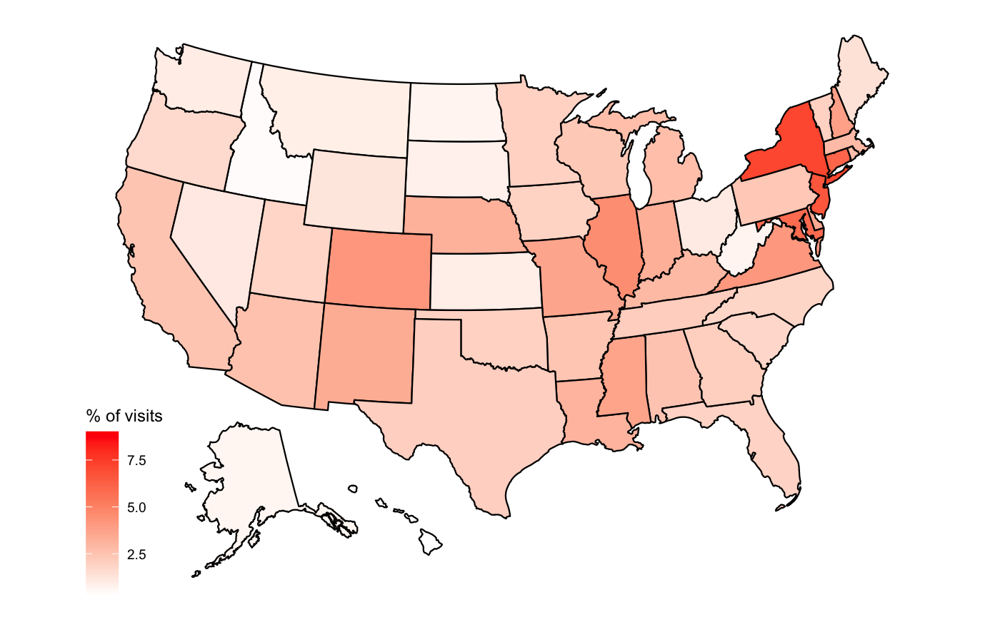
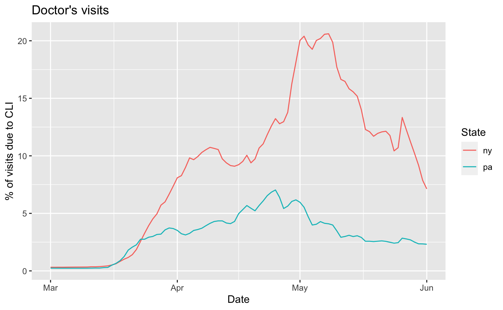

This package provides access to data frames of values from the COVIDcast API. Using the covidcast_signal() function, you can fetch any data you may be interested in analyzing, then use other R packages to graph results, make maps, fit models, or join the data with data from other sources.
This package is not on CRAN yet, so it can be installed using the devtools package:
devtools::install_github("cmu-delphi/covidcast", ref = "main", subdir = "clients/covidcastR")
For full usage information, see the function documentation.
To obtain smoothed estimates of COVID-like illness from our Facebook survey for every county in the United States between 2020-05-01 and 2020-05-07, we can use covidcast_signal():
library(covidcastR) cli <- suppressMessages( covidcast_signal("fb-survey", "smoothed_cli", start_day = "20200501", end_day = "20200507", geo_type = "county") ) head(cli)
## geo_value time_value direction value stderr sample_size
## 1 01000 2020-05-01 0 0.8230798 0.1255734 1722.4551
## 2 01001 2020-05-01 1 1.2612613 0.8004444 115.8025
## 3 01003 2020-05-01 0 0.6651292 0.3086796 584.3194
## 4 01015 2020-05-01 0 0.5747126 0.5265904 122.5577
## 5 01031 2020-05-01 NA 0.4081633 0.3474498 114.8318
## 6 01045 2020-05-01 NA 0.9259259 0.4660393 110.6544Each row represents one observation in one county on one day. The county FIPS code is given in the geo_value column, the date in the time_value column. Here value is the requested signal—in this case, the smoothed estimate of the percentage of people with COVID-like illness, based on the symptom surveys. stderr is its standard error. See the covidcast_signal() documentation for details on the returned data frame.
Notice the use of suppressMessages() to hide progress reporting from the function as it downloads the data; if you download particularly large amounts of data, you may prefer to allow the progress reporting so you know how long to wait.
Note that geo_value is the FIPS code for each reported county; counties with insufficient sample size are not reported. The API documentation specifies how geographies are identified.
To request estimates for states instead of counties:
cli <- suppressMessages( covidcast_signal("fb-survey", "smoothed_cli", start_day = "20200501", end_day = "20200507", geo_type = "state") ) head(cli)
## geo_value time_value direction value stderr sample_size
## 1 ak 2020-05-01 -1 0.4607721 0.1588797 1606.000
## 2 al 2020-05-01 0 0.6995113 0.0825528 7540.244
## 3 ar 2020-05-01 -1 0.7597977 0.1036508 4921.483
## 4 az 2020-05-01 0 0.5669367 0.0617943 11220.959
## 5 ca 2020-05-01 0 0.3649080 0.0228033 51870.138
## 6 co 2020-05-01 -1 0.6458274 0.0684669 10105.894One can also select a specific geographic region by its ID. For example, this is the FIPS code for Allegheny County, Pennsylvania:
cli <- suppressMessages( covidcast_signal("fb-survey", "smoothed_cli", start_day = "20200501", end_day = "20200507", geo_type = "county", geo_value = "42003") ) head(cli)
## geo_value time_value direction value stderr sample_size
## 1 42003 2020-05-01 0 0.3988456 0.1046833 2635.136
## 2 42003 2020-05-02 0 0.3802972 0.1069189 2589.751
## 3 42003 2020-05-03 -1 0.3369257 0.1042580 2552.011
## 4 42003 2020-05-04 -1 0.1358908 0.0638397 2568.443
## 5 42003 2020-05-05 -1 0.1438140 0.0668755 2482.389
## 6 42003 2020-05-06 -1 0.2489833 0.0887830 2530.457If we are interested in exploring the available signals and their metadata, we can use covidcast_meta() to fetch a data frame of the available signals:
meta <- covidcast_meta() head(meta)
## signal max_value min_value time_type last_update data_source
## 1 smoothed_adj_cli 87.86095 0 day 1594248750 doctor-visits
## 2 smoothed_adj_cli 47.95543 0 day 1594248707 doctor-visits
## 3 smoothed_adj_cli 32.97098 0 day 1594248694 doctor-visits
## 4 smoothed_adj_cli 20.55140 0 day 1594248686 doctor-visits
## 5 smoothed_cli 76.56961 0 day 1594248787 doctor-visits
## 6 smoothed_cli 44.29551 0 day 1594248712 doctor-visits
## min_time max_time geo_type stdev_value mean_value num_locations
## 1 2020-02-01 2020-07-05 county 2.800825 1.648615 2505
## 2 2020-02-01 2020-07-05 hrr 2.763754 2.018959 306
## 3 2020-02-01 2020-07-05 msa 2.435419 1.729666 380
## 4 2020-02-01 2020-07-05 state 2.426888 2.163669 51
## 5 2020-02-01 2020-07-05 county 2.432688 1.419158 2505
## 6 2020-02-01 2020-07-05 hrr 2.672196 1.898874 306This can be filtered and sliced as desired to obtain information about any signal of interest.
The usmap package can map counties and states in the United States. In combination with covidcastR, one can easily make maps of values on a specific date.
For example, on June 1, 2020, this is a map of the fraction of doctor’s visits in each state (as reported by our healthcare partners) that were due to COVID-like symptoms:
library(usmap) library(ggplot2) dv <- suppressMessages( covidcast_signal("doctor-visits", "smoothed_adj_cli", start_day = "20200601", end_day = "20200601", geo_type = "state") ) ## plot_usmap expects a "state" column dv$state <- dv$geo_value plot_usmap(data = dv, values = "value") + scale_fill_continuous(low = "white", high = "red", name = "% of visits")
## Warning: Use of `map_df$x` is discouraged. Use `x` instead.## Warning: Use of `map_df$y` is discouraged. Use `y` instead.## Warning: Use of `map_df$group` is discouraged. Use `group` instead.
(The warning messages appear to be an internal issue with the usmap package.)
It should also be possible to use the data with any other mapping packages you prefer, as long as they can easily identify states, counties, MSAs, or the other regions reported in the API according to the IDs reported in the API.
Using ggplot2 or your favorite plotting package, we can also easily plot time series from specific regions.
For example, this plot shows the same value – the fraction of doctor’s visits due to COVID-like symptoms – for the states of New York and Pennsylvania from March 1 through June 1, 2020.
ny <- suppressMessages( covidcast_signal("doctor-visits", "smoothed_adj_cli", start_day = "20200301", end_day = "20200601", geo_type = "state", geo_values = c("pa", "ny")) ) ggplot(ny, aes(x = time_value, y = value, color = geo_value)) + geom_line() + labs(x = "Date", y = "% of visits due to CLI", title = "Doctor's visits", color = "State")

This graph makes the peaks of the pandemic apparent; by loading other data sources from the API, such as cases and deaths, we could begin to conduct analyses comparing the time series against each other.